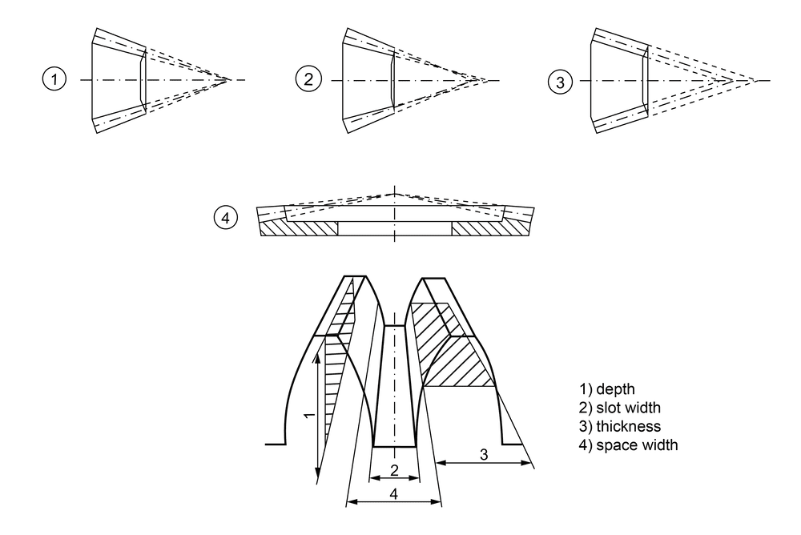

|
|
|


类型
您可以在屏幕左上角的选项卡中找到类型的下拉列表。
此处提供以下锥齿轮形状（参见图 16.1）：

图 16.1：锥齿轮的基本类型
- 标准型，图 1（齿顶锥、分度锥和齿根锥顶点在同一点）
几何按 ISO 23509 计算。无法设置偏置。如果单击 Sizing 按钮，将计算锥角，使锥齿轮在齿轮轴线的交点处彼此相交（类似于 ISO 23509 附录 C.5.2 中规定的标准）。在这种情况下，顶隙不是恒定的。对于模锻、注塑或烧结锥齿轮的简化选型，我们推荐此类型。 - 标准型，图 4（分度锥和齿根锥顶点在同一点）
齿轮 2 的齿顶角选型依据 ISO 23509 附录 C.5.2 或自定义输入。无法设置偏置。顶隙是恒定的。在计算配对齿轮的锥角时考虑了恒定的顶隙。 - 标准型，图 2（齿顶锥、分度锥和齿根锥顶点不在同一点）
齿轮 2 的齿顶和齿根顶点选型依据 ISO 23509 附录 C.5.2 或自定义输入。无法设置偏置。在计算配对齿轮的锥角时考虑了恒定的顶隙。对于具有一般锥角的直齿或斜齿锥齿轮（例如差速器锥齿轮），我们推荐此类型。 - 等槽宽，图 2（端面铣削，Gleason-Duplex）
几何按 ISO 23509 计算。您可以不带偏置（方法 0，弧齿锥齿轮）或带偏置（方法 1，准双曲面齿轮）进行此计算。如果单击 Sizing 按钮，则以"等槽宽"（ISO 23509 附录 C.5.2）计算锥角。顶隙是恒定的。图 5 中的间隙 2 不变。其典型应用是在"completing"工艺（duplex）中加工的磨削锥齿轮轮齿，其中小齿轮和锥齿轮各在一个工步中磨削。该工艺需要具有附加螺旋运动的机床。 - 修正槽宽，图 2（端面铣削，Gleason）
几何按 ISO 23509 计算。您可以不带偏置（方法 0，弧齿锥齿轮）或带偏置（方法 1，准双曲面齿轮）进行此计算。如果单击 Sizing 按钮，则以"修正槽宽"（ISO 23509 附录 C.5.2）计算锥角。图 5 中的间隙 2 会变化。典型应用是 5-section 工艺，其中小齿轮使用 2 种不同的机床设置制造，从而产生修正槽宽。该锥齿轮形状通常也称为 TRL（倾斜根线）。 - 等高齿，图 3（端面滚切，Klingelnberg）
几何按 ISO 23509 计算。您可以不带偏置（方法 0，弧齿锥齿轮）、带偏置（方法 3，准双曲面齿轮）或依据 KN 3028 和 KN 3029 进行此计算。齿顶锥和齿根锥是平行的。应用包括 cyclo-palloid® 工艺和 palloid 工艺。Palloid 轮齿的特征是渐开线齿长形，齿宽上法向模数恒定。 - 等高齿，图 3（端面滚切，Oerlikon）
几何按 ISO 23509 计算。您可以不带偏置（方法 0，弧齿锥齿轮）或带偏置（方法 2，准双曲面齿轮）进行此计算。齿顶锥和齿根锥是平行的。应用包括 Spiroflex 和 Spirac 等 Oerlikon 工艺。
English Original
Type
You will find a drop-down list for the type on the top left of the screen, in the tab.
The following bevel gear shapes are available here (see Figure 16.1):
Figure 16.1: Basic types of bevel gears
- Standard, Figure 1 (tip, pitch and root cone apex in one point)
The geometry is calculated according to ISO 23509. No offset possible. If you click the Sizing button, the cone angle is calculated so that the bevels meet each other in the crossing points of the gear axes (similar to the standard specified in ISO 23509, Annex C.5.2). In this case, the tip clearance is not constant. We recommend this type for the simplified sizing of form-forged, injection molded or sintered bevel gears. - Standard, Figure 4 (pitch and root apex in one point)
Sizing of the tooth tip angle of gear 2 according to ISO 23509, Annex C.5.2, or own input. No offset possible. The tip clearance is constant. A constant tip clearance is taken into account while calculating the cone angle of the counter gear. - Standard, Figure 2 (tip, pitch and root cone apex NOT in one point)
Sizing of the tooth tip and root apex of gear 2 according to ISO 23509, Annex C.5.2, or own input. No offset possible. A constant tip clearance is taken into account while calculating the cone angle of the counter gear. We recommend this type for bevel gears with straight or helical teeth with general cone angles, for example differential bevel gears. - Constant slot width, Figure 2, (face milling, Gleason-Duplex)
The geometry is calculated according to ISO 23509. You can perform this calculation either without offset (Method 0, spiral bevel gears), or with offset (Method 1, hypoid gears). If you click the Sizing button, the cone angle is calculated with a "constant slot width" (ISO 23509, Annex C.5.2). The tip clearance is constant. Gap 2 in Figure 5 does not change. A typical application of this is a ground bevel gear toothing produced in the "completing" process (duplex), where the pinion and the bevel gear are each ground in one work step. This process requires machines that have an additional helical motion. - Modified slot width, Figure 2 (face milling, Gleason)
The geometry is calculated according to ISO 23509. You can perform this calculation either without offset (Method 0, spiral bevel gears), or with offset (Method 1, hypoid gears). If you click the Sizing button, the cone angle is calculated with a "modified slot width" (ISO 23509, Annex C.5.2). Gap 2 in Figure 5 changes. A typical application is the 5-section process, where the pinion is manufactured with 2 different machine settings, and a modified slot width is consequently created. The bevel shape is often also referred to as a TRL (Tilted Root Line). - Uniform tooth depth, Figure 3 (face hobbing, Klingelnberg)
The geometry is calculated according to ISO 23509. You can perform this calculation without offset (Method 0, spiral bevel gears), with offset (Method 3, hypoid gears) or according to KN 3028 and KN 3029. The tip and root cone are parallel. Applications are the cyclo-palloid®process and the palloid process. Palloid toothing is characterized by an involute tooth length form with a constant normal module over the facewidth. - Uniform tooth depth, Figure 3 (face hobbing, Oerlikon)
The geometry is calculated according to ISO 23509. You can perform this calculation either without offset (Method 0, spiral bevel gears), or with offset (Method 2, hypoid gears). The tip and root cone are parallel. Applications are Oerlikon processes such as Spiroflex and Spirac.